In hierdie hoofstuk gaan jy leer oor hoe natuurrampe en oorloë mense se lewens kan ontwrig. Mense moet soms in sulke omstandighede uit nood hul huise verlaat. Mens sê dan dat hulle vlugtelinge is. Jy gaan leer hoe veilige, tydelike skuilings vir vlugtelinge geskep word en hoe noodlenigingswerkers hulle van kos en water voorsien.
6.1 Omstandighede wat vooroorsaak dat mense vlugtelinge word 86
6.2 Probleme wat vlugtelinge aan die begin ervaar 89
6.3 Vlugtelinge in 'n vreemde land 91
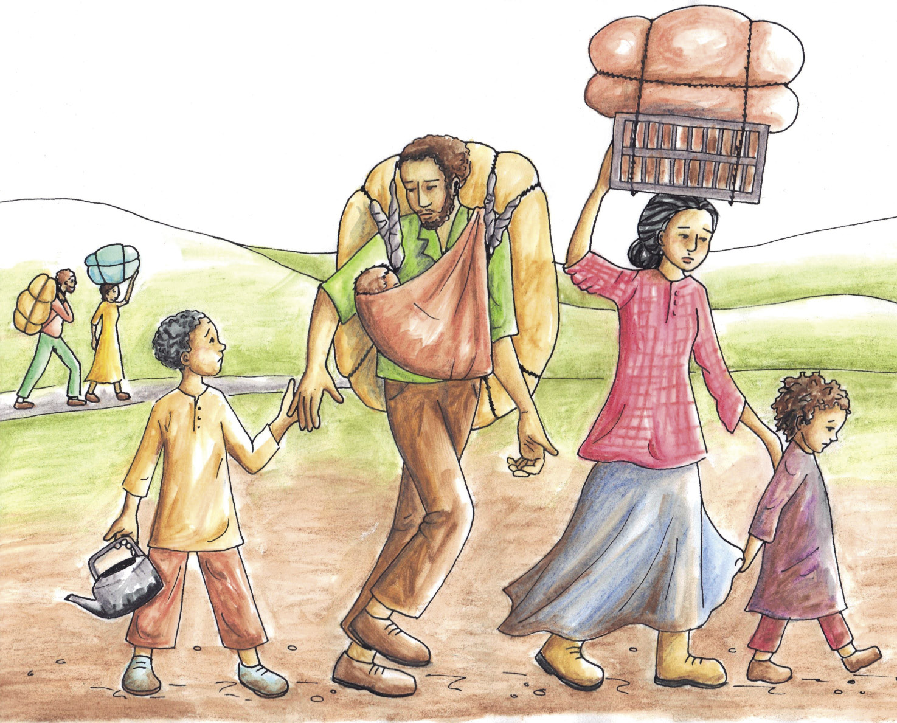
Figuur 1: Hierdie familie moes uit nood hul huis verlaat, en benodig nou 'n veilige plekom te bly totdat hulle na hul huis kan terugkeer.
6.1 Omstandighede wat vooroorsaak dat mense vlugtelinge word
'n Noodtoestand kan veroorsaak dat 'n groot aantal mense hulle huise moet verlaat. Dit beïnvloed nie net die mense wat hulle huise moes verlaat nie, maar ook die mense in die gebiede waar die vlugtelinge tydelik gehuisves word. Mense het skuiling, water en kos nodig. 'n Vlugtelingekamp moet opgerig word, en hierdie kamp moet goed beplan wees.
'n Noodtoestand kan veroorsaak dat 'n grootaantal mense hulle huise moet verlaat. Dit beïnvloednie net die mense wat hulle huise moes verlaat nie,maar ook die mense in die gebiede waar die vlugtelinge tydelik gehuisves word. Mense het skuiling, water en kos nodig. 'n Vlugtelingekamp moet opgerig word, en hierdie kamp moet goed beplan wees.
In hierdie les gaan jy leer oor noodtoestande en jy gaan maniere ondersoek om vlugtelinge te help.
Vlugtelinge: Mense wat hulle huise moes verlaat tydens 'n ramp of 'n ander noodtoestand. Soms vlug mense na veilige areas wat naby hulle huise is. In ander gevalle moet hulle ver reis na 'n veilige plek; partykeer selfs na 'n ander land.
Oorlog
Vanaf die vroegste tye was daar regoor oor die wêreld oorloë tussen mense. Terwyl weermagte veldslae veg, word mense gedwing om uit hulle dorpe en stede te vlug. Oor dieeeu heen het baie mense as vlugtelinge in vreemde plekke beland. Daar is selfs vandag meer as 3,8 miljoen vlugtelinge regoor oor Afrika. Hierdie mense is van hul huise verdryf as gevolg van oorloë.
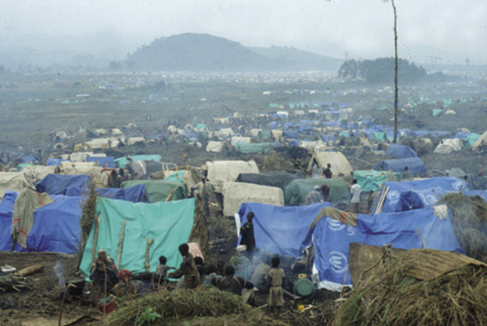
Figuur 3: Hierdie vlugtelingekamp is vir Rwandese vlugtelinge opgestel gedurende die oorlog in hul land in 1994.
Natuurrampe
Natuurrampe word deur die natuur veroorsaak en nie deur mense nie. Vloede, veldbrande, aardbewings en vulkaniese uitbarstings is almal natuurrampe wat mense kan dwing om hul huise te verlaat.
Natuurrampe gebeur normaalweg sonder enige waarskuwing. Hulle kan baie vinnig noodtoestande veroorsaak. Ditbeteken dat mense onmiddellik na veiliger areas moet trek.
In 2000, het 'n geweldige vloed Mosambiek getref en groot areas landeryvelde verwoes. Duisende mense het hul plase verloor en is gedwing om na droë grond te vlug. Vlugtelingekampe is in verskeie dele van Mosambiek en ook in Suid-Afrika opgestel.
Vergelyk die foto's hieronder. Hierdie foto's is geneem deur 'n satelliet in die buiteruim. Hulle wys dieselfde area in Mosambiek, voor en gedurende die vloed, en dit wys ook hoeveel van die land onder die vloed deurgeloop het.
'n Natuurramp kan ook oor 'n lang periode van tydplaasvind. In Afrika maak ons staat op die reën om ons oeste nat te maak,maar die kontinent beleef gereeld droogtes. Droogtes kan noodtoestande vir boere veroorsaak. Gedurende lang droogtes kan groot groepe mense forseer word om hul huise en plase te verlaat. Hierdie mense is dan op soek na kos, water en skuiling en word dan vlugtelinge.
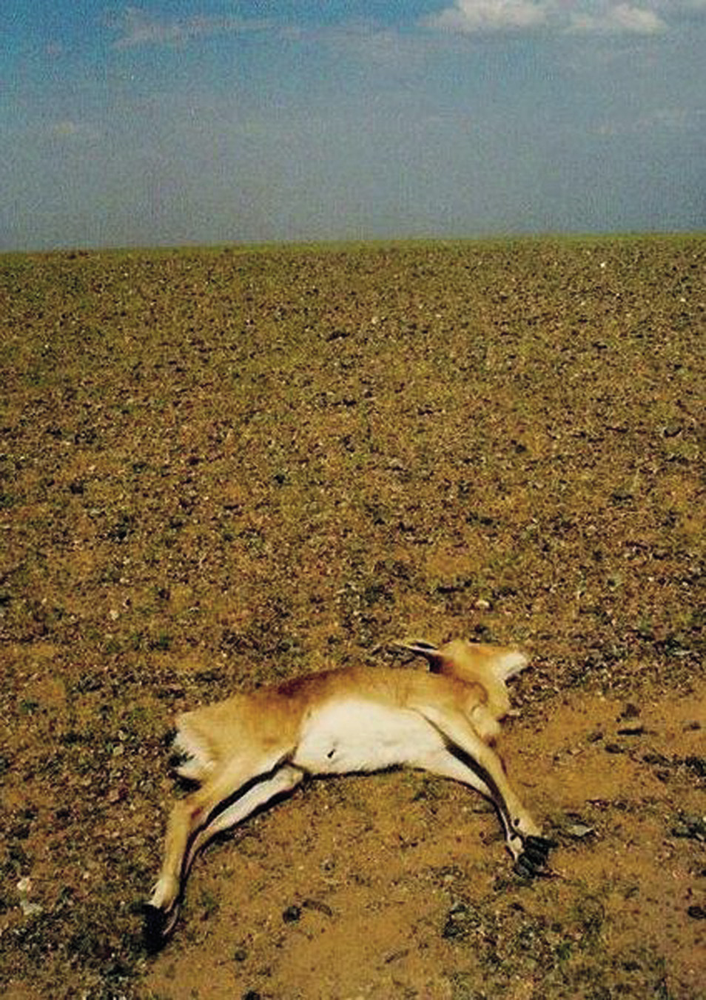
Figuur 6: Droogtes in Afrika veroorsaak verwoesting van habitat en die dood van wilde diere.
6.2 Probleme wat vlugtelinge aan die begin ervaar
Natuurrampe soos vloede en oorlog gebeur baie skielik. Dit beteken dat mense hulle huise vinnig moet verlaat. Hierdie vlugtelinge sal nie veel voedsel en water by hulle hê nie. Hulle sal ook nie die gereedskap of materiaal by hulle hê om skuilings mee te bou nie.
Die tipe noodtoestand sal die groepering van mense in 'n vlugtelingekamp bepaal. Soms sal daar meer mans as vrouens wees. Met ander tye sal daar baie meer babas wat nog nie kan loop nie wees, en ook klein kinders wees. Daar kan ook met tye baie bejaardes wees wat spesiale hulp en versorging nodig het.
Groepering van mense: Die verskillende tipes mense in groep, soos die jongmense en bejaardes, mans en vrouens, en gestremde mense.
Byvoorbeeld, gedurende 'n oorlog is daar gewoonlik minder mans by die huis omdat die mans in die oorlog moet veg. En gedurende droogtes sal babas en bejaardes dalk makliker omkom, omdat hulle meer kwesbaar is.
Verskillende mense het verskillende behoeftes aan voedsel, water en skuiling. Kinders raak makliker gedehidreer as volwassenes en benodig ook meer hoë-energie voedsel. Bejaardes benodig meer hitte en komberse.
‘n Paar vrae vir jou om te beantwoord
1. Watter noodtoestande gebeur vinnig en sonder waarskuwing?
2. Vuur, vloede en konflikte soos oorlog, gebeur sonder waarskuwing:
(a) die groepering van mense in die groep?
In oorloë moet die mans en ouer seuns gewoonlik weggaan. Die mense wat
agterbly is meestal die vroue, bejaardes, kinders, en gestremde mense.
(b) die hoeveelheid voedsel wat die vlugtelinge by hulle sal hê?
Skielike noodtoestande beteken gewoonlik dat daar geen gestoorde
voedsel is nie en dat toegang tot skoon water beperk kan wees. Wanneer vure
en vloed die oorsaak van die noodtoestand is, sal al die voorrade verwoes
wees, wat die mense dan sonder voorraad sal laat.
(c) die vermoë van vlugtelinge om hulle eie skuilings te bou?
Wanneer vuur en vloede nedersettings verwoes, sal die materiale om die
nie beskikbaar wees nie. In oorloë sal die mense wegtrek en is daar ʼn
moontlikheid dat hulle nie geskikte materiale sal vind nie. Hulle sal dalk ook
nie gereedskap hê nie. Dit is selfs moontlik dat hulle nie geskikte grond sal
vind om op te bou nie. .
3. Watter noodtoestande gebeur stadig, oor 'n langer tydperk?
4. Hoe sal die stadiger noodtoestande die volgende beïnvloed:
(a) die groepering van vlugtelinge in die groep?
Wanneer voedsel en water skaars is sal mense siek raak en heel moontlik
vroeër doodgaan. Bejaardes, siekes en babas sal die eerstes wees wat ly.
Mans en vroue kan dalk die nedersetting verlaat om werk of voedsel in ander
gebiede te gaan soek, en dit sal die aantal sterk mense in die groep verminder.
(b) hoeveel voedsel en water sal hulle by hulle hê?
Opgegaarde voedsel en water sal baie vinnig opraak indien die voorrade nie
opgevul word nie. Voedsel sal van plekke wat nie deur droogte geteister word,
ingevoer moet word. Die bietjie water wat oorbly kan besoedel raak en moet
dan eers skoongemaak word.
(c) sal hulle hul eie skuilings kan bou of nie?
Droogtes behoort nie die skuilings te beïnvloed nie, maar dit sal nie moontlik
wees om baie nuwe skuilings te bou nie. Daar sal nie genoeg hout vir rame en
gras vir dakke wees nie.
5. Watter noodtoestande is die moeilikste om op voorbereid te wees? Verduidelik hoekom jy so sê.
Skielike noodtoestande soos vloede en vuur gebeur onverwags en is moeilik om
op voorbereid te wees. Gemeenskappe kan op ʼn klein skaal voorberei vir hierdie
6. Watter noodtoestande is makliker om op voorbereid te wees? Verduidelik hoekom jy so sê.
Dit is makliker om voorbereid te wees vir lang termyn noodtoestande omdat
weervoorspellings ʼn goeie aanduiding kan gee oor wanneer droogtes kan voorkom.
Gemeenskappe kan vir hierdie droogtes voorberei deur voedsel te stoor,
alternatiewe waterbronne te skep, en seker te maak dat die bejaardes en jong

6.3 Vlugtelinge in 'n vreemde land
Wanneer vlugtelinge in 'n vlugtelingekamp beland, het hulle basiese behoeftes nodig soos voedsel, skoon water en skuiling. Hierdie basiese behoeftes kan verskaf word deur die noodlenigingwerkers wat hierdie kampe opstel.
In die volgende oefening gaan jy kyk na die ervarings van mense aan beide kante van die vlugtelinge situasie: die vlugtelinge en die noodlenigingwerkers wat hulle help.
Situasie: Vlugtelinge in ‘n vreemde land
Bespreek eers die situasie wat hieronder beskryf word in groepe van drie of vier, voordat jy self die vrae beantwoord. Jou antwoorde moet kort paragrawe wees.
- •
Gasheer: 'n Persoon wat voedsel, water en skuiling aan 'n ander persoon verskaf. 'n Gasheerland is land wat vlugtelinge van 'n ander land, help.
1. Hoe dink jy sal die groepering van mense saamgestel wees? Onthou dat dit 'n oorlog situasie is en dat mense van hulle eie land af weggevlug het. Dink aan die ouderdomme van die vlugtelinge en skryf neer watter groepe die meeste sorg en aandag gaan nodig kry.
Omdat dit ʼn oorlog situasie is, sal die jonger mans heel moontlik by die weermag
aansluit. Die groep sal meestal bestaan uit vroue, kinders, ouer mans, siek mense
Die mense wat die meeste aandag nodig sal hê is die jong kinders, die bejaardes
2. Wat is die behoefte aan skuiling? Onthou dat hulle nie veel van hulle besittings saam met hulle gebring het nie. Wie gaan aan hulle die skuilings, of die materiaal om skuilings mee te bou, verskaf?
Die vlugtelinge sal slegs dit wat hulle kon dra by hulle hê, dus sal hulle heel
moontlik geen materiaal of gereedskap by hulle hê nie. Die gasheerland sal
skuiling moet verskaf. Dit sal heel moontlik tydelike tente en eenvoudige
3. Watter voedsel en voorrade het die vlugtelinge nodig? Onthou dat die vlugtelinge vir lang tydperke aaneen te voet reis. Dink aan die ouderdom van die mense. Sal sommiges meer voedsel en water as ander nodig hê, en indien wel hoekom? Sal sommige van die mense spesiale sorg nodig hê, indien wel hoekom?
Die vlugtelinge sal dieselfde aantal voedsel en water nodig hê in hulle kamp as
dit waarop hulle voorheen gelewe heet. Hulle sal voedsame kos moet eet om
gesonde te bly. Kinders en jong volwassenes sal meer voedsel nodig hê as die
bejaardes. Water sal volop en skoon moet wees, aangesien vuil water siektes

Volgende week
Een van die grootste probleme in vlugtelingekampe is die voorsiening van voedsame kos. Voedsame kos verskaf al die voedingstowwe wat die liggaam nodig het om gesond te bly.
Dink aan die volgende vrae in voorbereiding op volgende week se les:
- • Watter voedsel is die maklikste om te verkry in jou area?
- • Watter voedsel is die goedkoopste om te koop in jou area?
- • Watter voedsel sal jy kies om 'n groot groep vlugtelinge in 'n groot vlugtelingekamp te voed?
In die vorige hoofstuk het jy oor vlugtelinge geleer en ook geleer waarom groot groepe mense gedwing kan word om hulle huise en lande te verlaat. Gewoonlik het vlugtelinge min of geen besittings nie. Hulle kan ook nie genoeg voedsel vir lang periodes saam met hulle dra nie. In hierdie hoofstuk gaan jy leer hoe om voedsel te prosesseer vir noodtoestande. Geprosesseerde voedsel hou baie langer as vars voedsel en is ideaal vir vlugtelingekampe. Jy gaan 'n ontwerpopdrag skryf en 'n noodtoestandmaaltyd beplan wat voedsaam en smaaklik is. Dit moet moontlik wees om hierdie noodtoestandmaaltyd in 'n vlugtelingekamp te kan maak.
7.1 Ondersoek tipes voedsel 96
7.2 Ondersoek jou vlugtelingekamp 101
7.3 Skryf 'n ontwerpopdrag om jou vlugtelingekamp te voed 102
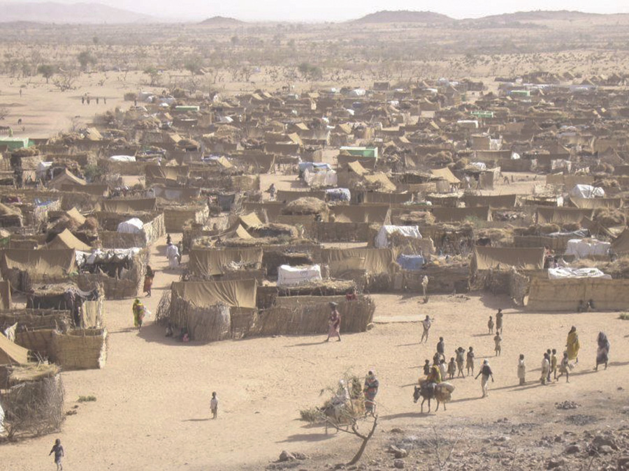Figuur 1: Vlugtelingekamp in Darfoer, Sudan, in Noord Afrika.
Figuur 2
7.1 Ondersoek tipes voedsel
Wanneer vlugtelinge na 'n gasheerland reis, versorg die mense in die gasheerland normaalweg die vlugtelinge.
In die vorige hoofstuk het jy geleer oor die groepering van mense en hoe hierdie groepering kan verander, afhangende of die noodtoestand deur 'n natuurramp of oorlog veroorsaak is.
Die tipe voedsel wat vlugtelinge eet, hang af van die groepering van mense in die groep. Kinders benodig meer proteïne as ouer mense, babas benodig spesiale melkformules, en bejaardes benodig baie groente om hulle teen siektes te beskerm.
As huiswerk moes jy nagedink het oor die tipes voedsel wat beskikbaar is in Suid-Afrika en ook aan voedsel wat 'n groot aantal mense kan voed. Die voedsel moet goedkoop, maklik om te vind en voedsaam wees.
Vlugtelinge verwag nie om duur voedsel te kry nie; hulle soek net genoeg en gesonde voedsel. Slegte voeding kan probleme soos siektes veroorsaak. Indien vlugtelinge swak of siek raak, kan hulle nie meer hulself versorg nie en die situasie in die vlugtelingekamp kan vererger.
Voedsame voedsel
Om gesond te bly, benodig die liggaam verskillende tipes voedsel wat bekend staan as voedselgroepe. Maaltye wat die regte kombinasie van verskillende voedselgroepe bevat, word gebalanseerde maaltye genoem. 'n Gebalanseerde maaltyd bestaan uit die volgende voedselgroepe:
- • Koolhidrate: verskaf energie en word gevind in styselvoedsel soos aartappels, mieliemeel, rys en brood.
- • Proteïne: bou spiere en gee aan ons krag. Proteïenryke voedsel sluit in vleis, hoender, vis, eiers, bone, kaas en melk.
- • Vette en olies: verskaf energie en help om ons interne organe te beskerm. Hulle help ook die liggaam om siektes te beveg. Voedsel in hierdie groep sluit in kaas, botter, margarien, en olies soos sonneblomolie en canolaolie
- • Vitamines en minerale: word gevind in alle voedsel, maar veral in vars vrugte en groente. Hulle is baie belangrik vir goeie gesondheid, sterk bene en tande, en help jou brein om goed te funksioneer. Vitamines help ook om siektes te voorkom. Byvoorbeeld, Vitamien C word gevind in lemoene en suurlemoene en beveg verkoues en griep.
Gebalanseerde diëte
Kyk na die tekening hieronder en identifiseer watter voedsel hoog is in koolhidrate, proteïne, vette en olies, en vitamines en minerale. Jy sal oplet dat soortgelyke voedsel saamgegroepeer is. Let ook op dat die groepe van dieselfde grootte of "proporsie" is. Die tekening wys dat ons soortgelyke proporsies van voedsel, van al vyf voedselgroepe, op 'n daaglikse basis moet eet, om gesond te bly.
Jy kan aan voedsaamheid dink as 'n wiel waar elke tipe voedsel 'n belangrike deel is.
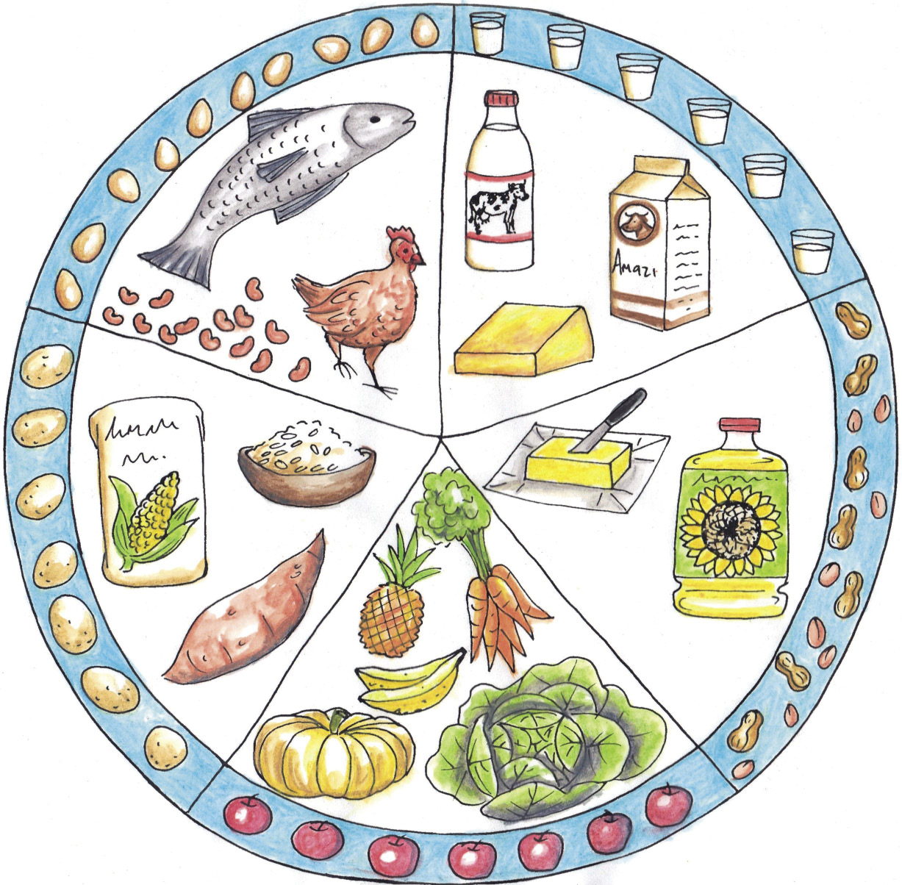
Figuur 4: 'n Gebalanseerde dieet bestaan uit voedsel van al vyf voedselgroepe per dag.
Onthou ook dat jou liggaam vars, skoon water nodig het om aan te hou werk en om die voedsel wat jy eet te verteer en te absorbeer.
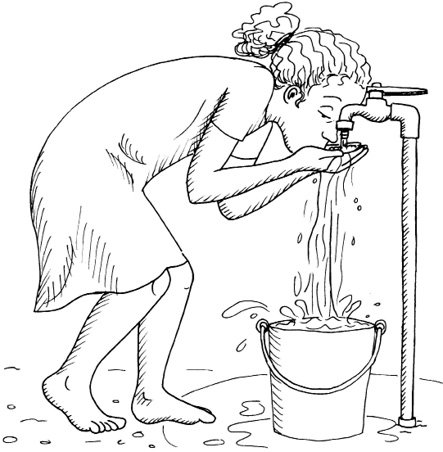
Figuur 5: Die drink van vars, skoon water is baie belangrik vir jou gesondheid.
As huiswerk in die vorige hoofstuk, is jy gevra om na te dink oor voedsel wat goedkoop en maklik is om te vind, en wat ook voedsaam is en maklik is om voor te berei.
- • Werk in pare en vergelyk jul huiswerk notas.
- • Verduidelik die redes vir julle keuses aan mekaar. Die hoofgedagtes om in ag te neem is die koste van die voedsel, hoe maklik dit is om in die hande te kry, en hoe voedsaam dit is.
- • Maak 'n gesamentlike besluit oor wat julle aan die vlugtelinge gaan gee om te eet. Indien albei van julle goeie planne het, kan julle 'n kombinasie van julle disse voorstel.
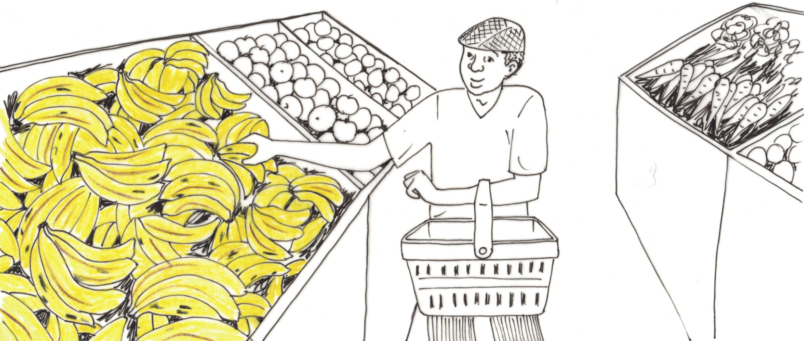
Figuur 6: Piesangs is baie voedsaam en goedkoop en is ook volop in die somer.
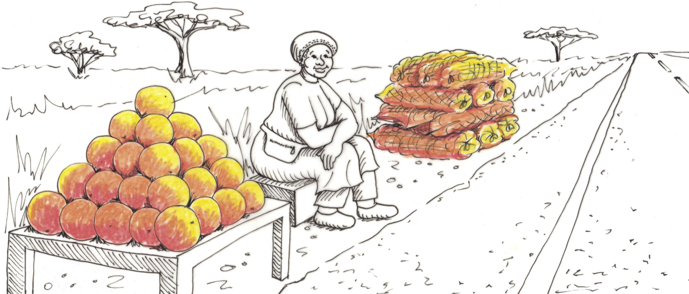
Figuur 7: Lemoene het baie Vitamine C om verkoues en griep te voorkom. Hulle is goedkoop en volop in die winter.
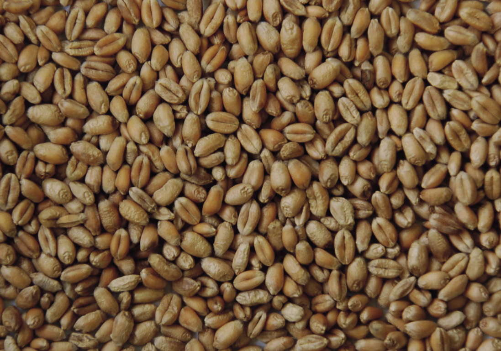
Figuur 8: Koring is baie voedsaam.
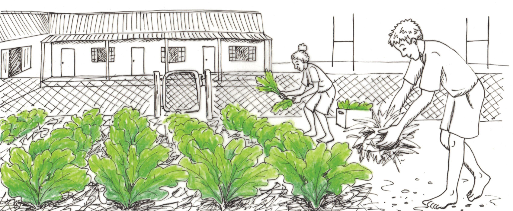
Figuur 9: Spinasie groei vinnig en is hoog in vitamines en minerale.
Vrae oor jou ondersoek
1. Watter tipe voedsel het jy gekies? Skryf ook neer hoekom jy dit gekies het.
Kyk na die leerders se antwoorde op hierdie vraag. Hulle moet hul voedselkeuses
baseer op beskikbaarheid, voedsaamheid en gemak van voorbereiding. Indien
enige leerder ʼn voedselsoort voorgestel het wat nie kwalifiseer nie, verwys hulle
2. Het jy die verskillende ouderdomsgroepe wat in die kamp mag wees in ag geneem? Indien jy verskillende voedsel vir verskillende ouderdomsgroepe gekies het, verduidelik waarom jy dit gedoen het.
Die leerders moet die vaardighede van verskeie ouderdomsgroepe om kos te eet
in ag neem. Jonger kinders en bejaardes kan nie harde voedsel maklik kou nie en
kinders benodig ekstra voeding. Die leerders moet hierdie faktore in ag neem.
3. Is daar genoeg van hierdie voedsel beskikbaar om 'n groot groep mense te voed? Skryf neer hoekom dit maklik sal wees om genoeg van hierdie voedsel vir die kamp te kan kry.
Die leerders moet fokus op voedsel wat maklik verkrygbaar is en wat goedkoop
is. Die leerders moet wys dat hulle begrip het van groot voorrade wat
beskikbaar moet wees om die groep deurlopend te voed.
4. Is die voedsel voedsaam? Skryf neer hoekom jy dink die voedsel wat jy gekies het die vlugtelinge gesond sal hou.
Maak seker dat die leerders gemengde maaltye verskaf wat al die voedselgroepe
5. Is dit maklik om voor te berei? Skryf neer die redes vir jou antwoord.
Die voedsel moet in groot hoeveelhede gekook word, so die leerders moet
verstaan dat daar baie bestanddele in ʼn enkele pot gekook moet word. Hulle

7.2 Ondersoek jou vlugtelingekamp
'n Groep van 100 vlugtelinge het hulle naby jou gemeenskap gevestig. Jy is gevra om kos aan hulle te voorsien. Voordat jy jou planne optrek, moet die hele klas besluite neem oor die kwessies hieronder.
- • Wat is die groepering van mense? Verdeel hulle in vier kategorieë: babas, kinders, volwassenes, en bejaardes. Vul die tabel hieronder in om jou met jou volgende taak te help.
Die aantal mense van verskillende ouderdomme in jou groep van 100 vlugtelinge
-
•
Ouderdomsgroep
Aantal mense in hierdie ouderdomsgroep
Babas (1–5 jaar oud)
20
Kinders (6–15 jaar oud)
30
Volwassenes (15–65 jaar oud)
40
Bejaardes (ouer as 65 jaar)
10
- • Jou groep het geen kos saam met hulle gebring nie. Besluit waar jy voedsel gaan vind om die mense te voed. Hoe gaan jy die voedsel vervoer? Hoe gaan jy dit kook?
- • Is daar 'n skoon waterbron naby? Hoekom is water belangrik vir skoonmaak en die kook van voedsel? Bespreek julle antwoorde met mekaar?
- • Sal die voedsel voedsaam wees? Kan jy die mense dieselfde voedsel elke dag gee totdat hulle hervestig kan word? Bespreek julle antwoorde met mekaar.
Skryf jou besluite neer soos wat jy hulle maak. Gebruik die spasie hieronder.
Die groep moet ander groepe nader vir ondersteuning. Regeringsorganisasies,
besighede, kerkgroepe of liefdadigheidsorganisasies kan dalk hulp verleen. Hulle
moet uitvind waar hulle voedsel kan kry en ʼn manier bewerkstellig om dit vervoer
te kry. Hulle gaan potte, panne, kombuisgereedskap, borde en bakkies, en messe
Die groep moet ʼn area vind waar daar skoon water is vir die kos om gekook te
word en ook om die kombuisgereedskap en borde en potte te was. Water is ook
belangrik vir die algemene higiëne in die kook proses om siektes te voorkom.
Solank as wat die voedsel voedsaam is, kan dit deur die groep geëet word vir
solank as wat hulle nodig het om gesond te bly.
7.3 Skryf 'n ontwerpopdrag om jou vlugtelingekamp te voed
Voordat jy kan uitwerk hoeveel voedsel jy vir 'n 100 mense benodig, moet jy eers uitwerk hoeveel voedsel jy vir een maaltyd nodig het. Die voedsel moet voedsaam, smaaklik en maklik wees om te vind. Dit moet ook soveel van die voedselgroepe as moontlik insluit.
Lys die bestanddele wat jy gaan nodig hê vir een persoon van elke ouderdomsgroep. Gebruik die tabelle hieronder. Een voorbeeld is vir jou gedoen.
Hoeveelheid van elke bestanddeel nodig om een baba te voed
|
Bestanddeel |
Hoeveelheid |
|
Stampmielies |
Een derde van 'n koppie (100 gram) |
|
Blikkies vis |
¼ blik |
|
Tamaties |
½ tamatie |
|
Sout |
5 ml |
Hoeveelheid van elke bestanddeel nodig om een kind te voed
|
Bestanddeel |
Hoeveelheid |
|
Stampmielies |
Twee derdes van 'n koppie (200 gram) |
|
Blikkies vis |
½ blikkie |
|
Tamaties |
1 tamatie |
|
Sout |
10 ml |
Hoeveelheid van elke bestanddeel nodig om een volwassene te voed
|
Bestanddeel |
Hoeveelheid |
|
Stampmielies |
1 koppie (300 gram) |
|
Blikkies vis |
1 blikkie |
|
Tamaties |
1 tamatie |
|
Sout |
10 ml |
Hoeveelheid van elke bestanddeel nodig om een bejaarde te voed
|
Bestanddeel |
Hoeveelheid |
|
Stampmielies |
Halwe koppie (150 gram) |
|
Blikkies vis |
½ blikkie |
|
Tamaties |
½ tamatie |
|
Sout |
10 ml |
Ontwerp ‘n maaltyd vir 100 vlugtelinge
Sodra jy die tabelle hierbo voltooi het, moet elkeen van julle 'n ontwerpopdrag skryf om die 100 vlugtelinge te voed. Jou ontwerpopdrag moet ook jou spesifikasies lys. Spesifikasies is bestanddele wat jy nodig het om die maaltyd te maak.
Jy moet uitwerk hoeveel van elke bestanddeel jy nodig het om een voedsame maaltyd vir elke ouderdomsgroep te maak.
Byvoorbeeld, dit is hoe jy die bewerkinge sal doen:
- • Een baba benodig 100 gram stampmielies vir een maaltyd. Vermenigvuldig nou die 100 gram met die aantal babas in jou groep.
- • Een kind benodig 200 gram stampmielies vir een maaltyd. Vermenigvuldig nou die 200 gram met die aantal kinders in jou groep.
- • Een volwassene benodig 300 gram stampmielies vir een maaltyd. Vermenigvuldig nou die 300 gram met die aantal volwassenes in jou groep.
- • Een bejaarde benodig 150 gram stampmielies vir een maaltyd. Vermenigvuldig nou die 150 gram met die aantal bejaardes in jou groep.
Byvoorbeeld:
Indien daar 20 babas in jou groep is, vermenigvuldig 100 gram met 20. Dit gee vir jou 2 000 gram of 2 kilogram stampmielies wat jy nodig het om al die babas vir een maaltyd te voed.
Indien daar 30 kinders in jou groep is, vermenigvuldig 200 gram met 30. Dit gee vir jou 6 000 gram of 6 kilogram stampmielies wat jy nodig het om al die kinders vir een maaltyd te voed.
Indien daar 40 volwassenes in jou groep is, vermenigvuldig 300 gram met 40. Dit gee vir jou 12 000 gram of 12 kilogram stampmielies wat jy nodig het om al die volwassenes vir een maaltyd te voed.
Indien daar 10 bejaardes in jou groep is, vermenigvuldig 150 gram met 10. Dit gee vir jou 1 500 gram of 1,5 kilogram stampmielies wat jy nodig het om al die bejaardes vir een maaltyd te voed.
Skryf nou die spesifikasies vir jou ontwerpopdrag op die volgende bladsy. Maak twee lyste. In die eerste lys skryf jy al die bestanddele wat jy nodig het om 'n voedsame maaltyd vir 100 vlugtelinge te maak, neer. In die tweede lys, skryf jy die hoeveelheid van elke bestanddeel wat jy gaan nodig kry neer.

Skryf jou ontwerpopdrag
Naam van bestanddeel nodigHoeveelheid van die bestanddeel
|
|
|
Hierdie is gebaseer op die berekening wat gemaak is deur 10 babas, 30 kinders, 40 volwassenes, en 10 bejaardes te gebruik. Leerders moet die hoeveelheid voedsel wat deur elke persoon, per maaltyd, benodig word, vermenigvuldig. Die leerders moet hulle eie bewerkings doen gebaseer op die voedsel wat hulle self gekies het en die hoeveelhede wat hulle voorgestel het.

Volgende week
Volgende week gaan jy 'n maaltyd volgens jou ontwerpopdrag voorberei. Dit moet smaaklik, voedsaam, maklik verkrygbaar weesen maklik om te maak wees. Jy gaan die maaltyd proe en self evalueer, so jy moet versigtig dink oor wat jy gaan voorberei!
In die vorige hoofstuk het jy die tipes voedsel, wat vlugtelinge nodig het om gesond te bly terwyl hulle in 'n noodtoestand is, ondersoek. Jy het oor voeding geleer en oor die voedselgroepe wat in elke maaltyd teenwoordig moet wees. Jy het ook 'n ontwerpopdrag geskryf om 'n vlugtelingekamp van 100 mense te voed. In hierdie hoofstuk gaan jy oor die volgende leer en doen:
8.1 Metode om 'n gedeelte van die maaltyd voor te berei 108
8.2 Berei die maaltyd voor 111
8.3 Evalueer die maaltyd 113

Figuur 1
8.1 Metode om 'n gedeelte van die maaltyd voor te berei
Kies een item van die voedsel van jou noodtoestand maaltyd. Onthou dat dit:
- • voedsaam,
- • maklik verkrygbaar,
- • maklik om te kook, en
- • smaaklik moet wees.
Voor jy die maaltyd voorberei, skryf eers die stappe neer wat jy moet volg om die maaltyd te maak. Skryf die stappe in die korrekte volgorde neer, van die begin tot die einde. Dink versigtig naoor wat jy eerste moet doen, en dan ook wat jy volgende moet doen. Om die stappe op hierdie manier te lys, beteken dat jy die stappe in volgorde neerskryf. Skryf die stappe onder mekaar in 'n tabel neer.
Maar doen eers die volgende: skryf neer hoe of hoekom jy elke stap gaan volg. Hoe jy 'n stap gaan volg, word 'n instruksie genoem. Hoekom jy 'n stap gaan volg word 'n rede genoem. Skryf die instruksie, of rede vir elke stap, langs daardie stap neer. Kyk na die skets hieronder om te sien wat Linda gedoen het.

Figuur 3: Trek 'n tabel op wat wys wat jy moet doen om voedsel van die begin tot die einde te maak. Skryf hoe of hoekom jy elke stap volg in die tweede kolom langs elke stap.
Jy moet deeglik beplan, en dan jou plan uiteensit deur die volgende riglyne te volg:
- • Dui aan of die voedsel wat jy gaan kook vir ontbyt, middagete of aandete is. Verduidelik hoekom jy besluit het om die voedsel vir die spesifieke maaltyd te kook. Hier is 'n voorbeeld wat wys hoe die antwoord in die tabel ingevul moet word:
Voorbeeld
|
Ontbyt |
Dit is die belangrikste maaltyd van die dag en sal aan die vlugtelinge die energie gee wat hulle nodig het. |
- • Watter item van die voedsel het jy gekies? Verduidelik hoekom. Bestaan dit meestal uit koolhidrate of proteïne? Kyk weer na die voedselgroepe waarvan jy in hoofstuk 7 geleer het.
Voorbeeld
|
Stampmielies |
Dit is hoog in koolhidrate, vir baie energie. |
- • Bepaal hoeveel van elke bestanddeel jy gaan nodig hê om die item van die voedsel vir een volwassene te maak. Om dit te doen, kyk weer na jou ontwerpopdrag in hoofstuk 7.
Voorbeeld
|
Stampmielies |
300 gram |
- • Skryf neer hoe jy hierdie item van die voedsel gaan voorberei. Skryf elke stap van die proses neer.
Voorbeeld
|
Meet |
Weeg 300 gram stampmielies uit. Meet 1 liter water uit. |
- • Hoe gaan jy die voedsel kook? Onthou, vir hierdie aktiwiteit gaan jy die proses neerskryf wat jy by die huis sal doen, nie hoe jy dit by 'n vlugtelingekamp sal doen nie.
Voorbeeld
|
Kies 'n pot |
Kies 'n pot wat geskik sal wees vir die kook van die voedsel. |
|
Meng die bestanddele |
Plaas die stampmielies, water en sout in die pot. |
- • Hoe lank dink jy sal die voorbereiding en die kookproses neem?Deel dit op in stappe. Voeg al die stappe se tye bymekaar en skryf dan die totale tyd onder neer.
Voorbeeld
|
Meet bestanddele |
5 minute |
|
Meng bestanddele |
2 minute |
|
Kook bestanddele |
30 minute |
|
Totale tyd |
37 minute |
- • Vra 'n volwassene by die huis om jou te help. Skryf in jou plan neer wie hierdie persoon gaan wees.

Figuur 4: Vra 'n volwassene om jou met die bestanddele en die kookproses te help.
Sodra jou plan voltooi is, neem dit skool toe. Bespreek jou plan met 'n ander leerder. Hierdie is 'n belangrike deel van die beplanning voor jy jou maaltyd kook. Indien enige een van julle twee 'n belangrike stap uitgelaat het, sal julle die plan moet herskryf. Onthou, die stappe in jou plan is jou riglyn om die voedsel te kook.
8.2 Berei die maaltyd voor
In hierdie les gaan jy jou plan volg en die item van voedsel by die huis voorberei. Dit sal slegs genoeg wees vir een persoon, en nie vir 'n 100 mense nie! Jy sal dan die voedsel skool te bring en die klas sal dit evalueer.
Jy moet hierdie deel van die aktiwiteit by diehuis doen.
- • Kry al die bestanddele voor jy begin.
- • Lees deur die plan wat jy geskryf het om jou te help. Volg die stappe noukeurig.
-
•
Indien jy een van die stappe verander, skryf neer hoe
jy dit verander het. Skryf ook neer waarom jy dit verander
het. Jy gaan hierdie inligting gebruik wanneer jy jou maak
volgorde evalueer.
Baie belangrik!
Jy moet toestemming van 'n volwassene kry wanneer jy gereedskap by die huis gebruik vir die kook van die voedsel en ook vir die gebruik van die bestanddele.
Vra 'n volwassene om jou te help kook.

Figuur 5: Vra 'n volwassene om jou te help met die bestanddele en ook met die kookproses.
Skryf enige veranderinge wat jy aan die metode of die bestanddele gemaak het hier neer:
Nadat jy die maaltyd gekook het, proe jou maaltyd om seker te maak dat dit lekker smaak. Dit beteken dat jy die smaaklikheid van die maaltyd evalueer. Indien jy die maaltyd vir die korrekte tydsduur gekook het, behoort dit maklik te wees om te kou en te sluk. Dit beteken dat jy die tekstuur van die maaltyd evalueer. Jy gaan die maaltyd aanbied vir evaluering, so dit moet heerlik smaak en ook gesond wees. 'n Gesonde maaltyd sal die korrekte voedingswaarde hê. Jy het oor voeding geleer in hoofstuk 7.
Veiligheidswaarskuwing
Indien jy 'n oop vuur gebruik om op te kook, moet jy onthou dat vure gevaarlik is.
Maak altyd seker dat daar veiligheidsmaatreëls in plek is.
Beskryf jou evaluering van die maaltyd:
Stoor die maaltyd in 'n plastiekhouer wat geseël kan word om lug uit te hou. Indien jy nie 'n spesiale houer het nie, gebruik 'n leë margarienhouer.
Plaas die houer oornag in die yskas. Bring jou item voedsel die volgende dag skool toe vir evaluasie.
8.3 Evalueer die maaltyd
Bring jou voorbereide maaltyd na die skool vir evaluering. Verdeel in groepe van vier. Gebruik plastiek lepels om mekaar se maaltye te proe.
Higiëne waarskuwing
Bring jou eie lepel na die skool. Indien jy 'n lepel deel, was dit met seep en water voordat jy dit gebruik.
Nadat jy die maaltye van die ander leerders geproe het, skryf 'n evaluasie van hulle maaltye, en ook van jou eie maaltyd, neer.
Evalueer elke maaltyditem. Gebruik die kontrolelys hieronder. Merk "ja" of "nee" by elke vraag.
|
Ja |
Nee |
|
|
Smaak: Is die maaltyd smaaklik? |
✔ |
|
|
Tekstuur: Is die maaltyd vir die regte tydsduur gekook? |
✔ |
|
|
Voedingswaarde: Is die maaltyd gesond? |
✔ |
|
|
Kommentaar: Die smaak is nie noodwendig so belangrik nie, (aangesien vlugtelinge die maaltye vir ʼn relatiewe lang tyd moet eet, moet dit wel ingedagte gehou word), maar die voedingswaarde en tekstuur moet goed wees. Indien enige leerders "nee" op die vrae geantwoord het, vra hulle hoekom. Indien dit die tekstuur is, is dit moontlik dat die maaltyd vir te lank of te kort gekook is. Die voedingswaarde moet van hoofstuk 7 al deur die leerders verstaan word. |
- •
Skryf nou 'n evaluasie van jou eie maaltyd neer, volgens die terugvoer wat jy ontvang het.Skryf jou evaluasie in paragraaf vorm.
Byvoorbeeld:
Ek het hierdie taak baie interessant gevind. Dit was aanvanklik baie moeilik om uit te werk hoe om seker te wees dat daar genoeg proteïne en koolhidrate sal wees, dusek het die voedselgroepe gebruik om my te lei. Ek het stampmielies gekies omdat dit 'n baie voedsame graansoort is; dit is goedkoop en maklik om te vind. Ek het die kooktye van die stampmielies nagegaan om seker te maak dat dit ordentlik gekook is en dat die tekstuur reg is. Ek het sout en botter by die stampmielies gevoeg om te verseker dat dit smaaklik is.
Skryf nou 'n tweede paragraaf oor alles wat jy in hierdie hoofstuk geleer het. Aan die einde van die paragraaf, skryf hoe jy volgende keer dinge anders sal doen.
Byvoorbeeld:
In hierdie hoofstuk het ek oor beplanning geleer. Ek het ook geleer hoe om 'n maaltyd te beplan en te kook. Indien ek hierdie les sou oor doen, sou ek spinasie by die stampmielies gevoeg het omdat spinasie vitamines het wat nie in stampmielies te kry is nie. Spinasie sou die maaltyd baie meer voedingswaarde gegee het.
Volgende week
In die volgende les gaan jy materiale ondersoek wat gebruik kan word in reddingsoperasies. Kies twee nooddienste wat die gemeenskap dien, byvoorbeeld brandweerdienste en die Nasionale See-Reddings Instituut.
In die vorige drie hoofstukke het jy situasies ondersoek wat veroorsaak dat mense vlugtelinge word. Jy het ook die prosessering van voedsel ondersoek. Jy het 'n ontwerpopdrag geskryf vir 'n maaltyd vir 100 vlugtelinge, en jy het 'n maaltyd wat genoegsame voedingswaarde het en ook smaaklik is, beplan, gekook en evalueer. In hierdie hoofstuk gaan jy die spesiale klere wat deur reddingswerkers in noodtoestande gedra word, ondersoek. Byvoorbeeld, hierdie reddingswerkers kan van die brandweerdienste of van die Nasionale See-Reddings Instituut (NSRI) wees.
9.1 Nooddienste 118
9.2 Klere vir reddingswerkers 119
9.3 Ondersoek beskermende klere en nooddienstetoerusting 122

Figuur 1: Brandbestryders moet spesiale klere dra om hulle teen vuur te beskerm.
9.1 Nooddienste
Gevaarlike situasies soos vure, vloede en ongelukke gebeur gewoonlik onverwags. Mense moet onmiddellike aksie neem om die slagoffers wat betrokke is se lewens te red. Hierdie tipe situasie word 'nnoodtoestand genoem.
Noodtoestande beteken nie altyd dat mense weggedryf word van hulle huise nie. 'n Noodtoestand kan soms net een familie, of selfs net een persoon, affekteer.
Byvoorbeeld, 'n huis wat brand, of 'n veldbrand, kan 'n hele groep huise in gevaar stel. Ander voorbeelde van noodtoestande is wanneer swemmers in die moeilikheid beland in die see, of wanneer vissermanne in die moeilikheid is as gevolg van 'n sinkende boot.
Mense wat in noodtoestande werk, word reddingswerkers genoem. Hulle word spesiaal opgelei om noodtoestande te hanteer, en hulle moet gereed wees om vinnig op 'n hulproep te reageer. Nooddienste sluit in die brandweerdienste, polisie, ambulanse, en see-reddingsdienste.
Reddingswerkers betree gevaarlike situasies, dus is ditnoodsaaklik dat hulle beskermende klere dra.
- •
Nooddienste
1. Dink na oor noodtoestande wat in jou gemeenskap kan gebeur en lys hulle hieronder.
Vuur; vloede; verkeersongelukke; verdrinking in die see, damme of riviere;
2. Lys die nooddienste wat ontbied kan word vir hulp in 'n noodtoestand.
Brandweer; Polisiedienste; Nasionale Verdedigings Mag; Rampbestuur spanne;
Nasionale See-Reddings Instituut (NSRI); Ambulansdienste; Vuurbeskerming
3. Dink aan ander gemeenskappe. Is daar noodtoestande wat hulle kan affekteer, maar wat nie jou gemeenskap sal affekteer nie? Dink oor die omgewing waar hierdie gemeenskappe bly. Is daar riviere of strande naby? Is hulle in die stede, dorpe, bosgebiede, of graslande? Lys al die noodtoestande wat in hierdie plekke kan plaasvind. Lys dan ook die nooddienste wat ingeroep kan word om hulle te help.
|
Noodtoestande |
Nooddienste |
|
|
|
|
|
|
|
|
|

9.2 Klere vir reddingswerkers
Reddingswerkers dra beskermende klere wat spesiaal ontwerp is om hulle teen die gevare waarmee hulle in aanraking kan kom gedurende 'n noodtoestand, te beskerm.
Byvoorbeeld, brandbestryders benodig beskerming teen vlamme, rook en hitte, en see-reddingswerkers benodig beskerming van water, reën, wind en koue.
Die materiaal wat gebruik word om enige tipe kledingstuk te maak, word tekstiel genoem. Spesiale tekstiele word gebruik om beskermende klere te maak. Hierdie tekstiele word gemaak van geweefde of gebreide materiaal, wat met chemikalieë behandel word om aan hulle spesiale eienskappe te gee, byvoorbeeld waterdigtheid of brandwerendheid.

Figuur 3: 'n Vuur op 'n berg. Brandbestryders monitor die situasie om seker te maak dat die naburige gemeenskap veilig is.
'n Brandbestryder se beskermende klere 'n See-redder se beskermende klere
Brandbestryders se baadjies word gemaak van brandwerende tekstiele, en word omlyn met reflekterendeband sodat hulle raakgesien kan word in die rook.

Brandbestryders se stewels word van sterk leer, met dik sole gemaak om hulle voete teen die vlamme te beskerm.

See-reddingswerkers se baadjies word ontwerp om hulle droog en warm te hou, selfs in wilde storms. Die baadjies word gemaak van dik plastiek of rubber.

Waterdigte stewels of Wellingtons, word uit dik rubber gemaak. Hierdie stewels hou die see- reddingswerkers se voete en bene droog en warm. Die rubbersole keer ook dat hulle nie op nat bote of skepe se bodekke gly nie.

Figuur 4
Klere vir reddingswerkers
Jy het nou geleer van sommige beskermende klere wat deur reddingswerkers gebruik word, enjy gaan nou beskermende klere van jou eie ontwerp.
Wellington stewels is vernoem na die voormalige hertog van Wellington, in Engeland. Hy is bekend as 'n soldaat wat hierdie stewels in die oorlog gedra het.
Brandbestryders en see-reddingswerkers dra spesifieke klere, soos op die vorige paar bladsye beskryf is. Dink na oor ander nooddienste wat jy gelys het in die oefening "Nooddienste".
1. Skryf ten minste drie noodtoetstand situasies neer waarop hierdie nooddienste moet reageer.
1. ʼn Vuur in ʼn nedersetting.
3. Swemmers wat deur sterk seestrome die see ingetrek word.
2. Maak 'n lys van spesiale beskermende klere wat hulle in elke situasie moet dra.
See-redding: waterdigte warm klere, helmet, handskoene, reddingsbaadjie, stewels.
3. Skryf neer van watter tekstiele hierdie klere gemaak moet word.
Vure: brandwerende materiaal soos katoen of wol. Sterk plastiek helmet en
See-redding: Rubber (neopreen) duikpak en handskoene. Rubber stewels met
glip-vrye sole. ʼn Rubber baadjie vir baie koue weer. Sterk, styf-passende
plastiek helmet, en reddingsbaadjie wat gemaak is van rubber en gevul is met
4. Teken 'n prent van een tipe beskermende kledingstuk waaroor jy geskryf het.
Moedig leerders aan om aan ʼn item te dink wat nie alreeds hierbo geïllustreer is

9.3 Ondersoek beskermende klere ennooddienstetoerusting
In hierdie afdeling gaan jy die verskillende tipes beskermende klere en nooddienstetoerusting ondersoek wat deur brandbestryders en see-reddingswerkers gebruik word.
Werk saam in groepe van vier.
Kies een van die nooddienste beroepe waaroor jy reeds geleer het: brandbestryding of see-redding.
Bespreek in detail die klere wat hierdie reddingswerkers moet dra om hulle in hulle pligte te beskerm. Gebruik die inligting wat in hierdie hoofstuk gegee word, maar probeer ook om ekstra inligting van mense wat jy ken, te verkry. Byvoorbeeld, jy mag dalk iemand ken wat by die brandweerstasie werk en jy kan met daardie persoon gesels. Die prente hieronder sal jou meer inligting gee.
Beskermende toerusting of nooddienstetoerusting word deur reddingswerkers gebruik en sluit in reddingsbaadjies vir see-reddingswerkers, en suurstoftenks vir brandbestryders.

See-reddingswerkers dra altyd reddingsbaadjies wanneer hulle werk. Reddingsbaadjies help hulle om te dryf wanneer hulle in die see is en keer dat hulle verdrink. 'n Reddingsbaadjie word van dik plastiek of rubber gemaak en het lug aan die binnekant sodat dit kan dryf.
Figuur 5
Brandbestryders dra suurstof by hulle om hulle te help asemhaal wanneer daar baie rook van 'n vuur is. 'n Suurstoftenk is 'n voorbeeld van die tipe beskermende toerusting wat deur brandbestryders gebruik word.
Die tenk word van 'n dik metaal gemaak om te keer dat die suurstof ontplof. Die pype word van rubber gemaak sodat dit waterdig is.
Die skakels word bedek deur glas of deursigtige plastiek, wat albei waterdig is.

Figuur 6: Brandbestryders gebruik suurstoftenks.
Beskermende klere en nooddienstetoerusting
Nadat jy jou ondersoek gedoen het en jy al die inligting het, vul die tabel hieronder in.
Skryf in die eerste kolom 'n kledingstuk of toerusting waarvan jy geleer het, neer. Antwoord dan die vrae in die ander kolomme. Jy moet weet waarvan die kledingstuk of toerusting gemaak is, en ook waarom dit van hierdie materiaal gemaak word. Hieronder is twee voorbeelde om jou te help.
|
Brandbestryders |
See-reddingswerkers |
|||
|
Gemaak van? |
Waarom? |
Gemaak van? |
Waarom? |
|
|
baadjie |
brandwerende tekstiel |
kan nie brand nie |
dik plastiek |
kan slegte weer weerstaan en hou die reddingswerker warm en droog |
|
stewels |
leer |
sterk genoeg om brandbestryders se bene en voete van vlamme te beskerm |
rubber |
waterdig |
|
handskoene |
leer |
brandwerend |
rubber |
waterdig en warm |
|
helmet |
sterk plastiek |
beskerm brandbestryders van vallendevoorwerpe |
sterk plastiek |
beskerm reddingswerkers om nie hulle koppe teen opdrifsels te stamp of seer te kry in ʼn ongeluk nie |
|
skerm-brille |
sterk plastiek en dik glas |
beskerm brandbestryders se oë van rook en vonke |
sterkplastiek en glas ofPerspex |
beskermreddings-werkers se oë van soutwater en help hulle om te sien waar hulle swem |
Nadat jy die tabel voltooi het, beantwoord die volgende vrae op jou eie:
1. Hoekom is dit belangrik dat daar van beskermende tekstiele gebruik gemaak word om klere vir reddingswerkers te maak?
Reddingswerkers het soveel as moontlik beskerming nodig wanneer hulle in ʼn
noodtoestand situasie werk, of dit nou vuur of water is. Dit help hulle om hulle
2. Watter klere moet brandbestryders dra, en watter toerusting moet hulle dra om te reageer op 'n hulproep?
Brandbestryders is geheel en al bedek met brandwerende klere, hulle dra sterk
stewels, handskoene, helmets en skermbrille. Hulle moet die regte toerusting by
hulle dra vir die tipe vuur wat hulle moet hanteer: veldbrand, informele
nedersetting brand, hoë gebou brand, bosbrand. Hulle is kenners en weet wat om
saam te neem in elke geval.
3. In watter ander noodtoestande moet spesiale klere of toerusting gebruik word? Dink aan die vlugtelinge waarvan jy in hoofstuk 6 geleer het. Watter tipe noodgevalle kan in hulle kamp gebeur?
In vlugtelingekampe is die grootste gevare vuur en siektes. Vir vure word die
toerusting wat in hierdie hoofstuk bespreek is, gebruik. In die geval van siektes
wat uitbreek, sal mediese werkers beskermende klere dra, rubber handskoene,

Volgende week
Volgende week gaan jy met jou mini-PAT vir hierdie kwartaal begin. In hierdie mini-PAT gaan jy 'n natuurramp ondersoek en noodskuilings ontwerp vir die slagoffers van hierdie ramp. Jy gaan ook 'n ontwerp idee skets en 'n model van 'n noodskuiling bou.
Vir die volgende drie weke gaan jy boutegnieke van die verlede tot nou ondersoek, asook die maak van waterdigte materiaal en die brandeienskappe van tekstiele ondersoek. Jy gaan hierna 'n model noodskuiling ontwerp en bou. Jy gaan op jou eie werk en jou onderwyser gaan jou werk assesseer.
Week 1
Ondersoek materiale en boutegnieke wat deur inheemse mense gebruik is vir diekonstruksie van huise, asook die materiaal en tegnieke wat gebruik word in informelenedersettings 128
Week 2
Ondersoek chemikalieë wat tekstiele waterdig en brandwerend kan maak. Vind ookuit omtrent die brandeienskappe van verskillende tekstiele 138
Week 3
Ontwerp en maak 'n noodskuiling vir mense wat haweloos geraak het 144
Assessering
Ontwerp:
Ontwerpopdrag en spesifikasies [12]
Ontwerpskets [20]
Maak:
Waterdigte materiaal [10]
Model noodskuiling [28]
[Totale punte 70]
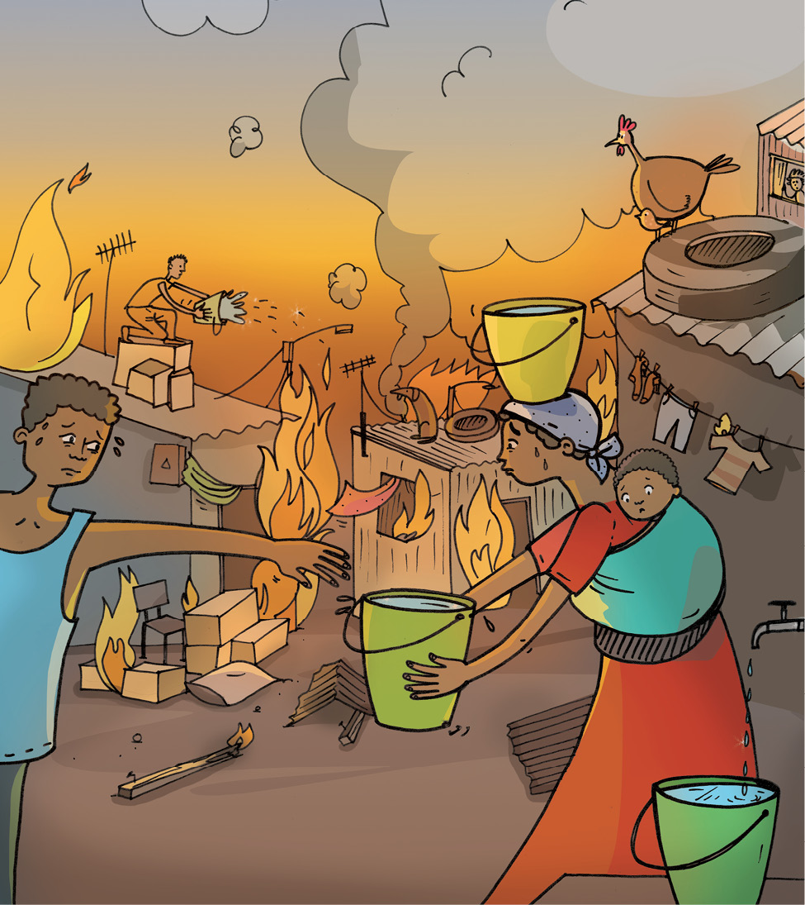
Figuur 1: 'n Informele nedersetting gedurende 'n brand
Plakkers het baie probleme wat hulle in die gesig staar. Spesifiek vuur is gevaarlik. Plakkersbrande veroorsaak jaarliks die dood van baie mense. Mense in plakkerskampe gebruik oop vure en kerse vir hitte en lig. Wanneer 'n kers omval, of 'n oop vuur nie nat genoeg gemaak word om die vlamme te blus nie, breek brande uit. Hierdie brande versprei baie vinnig omdat die plakkershutte baie naby aanmekaar gebou word. Daar is ook geen ordentlike paaie tussen die plakkershutte nie. Dit maak dit baie moeilik vir brandbestryders om by die brande uit te kom en die brande te blus.
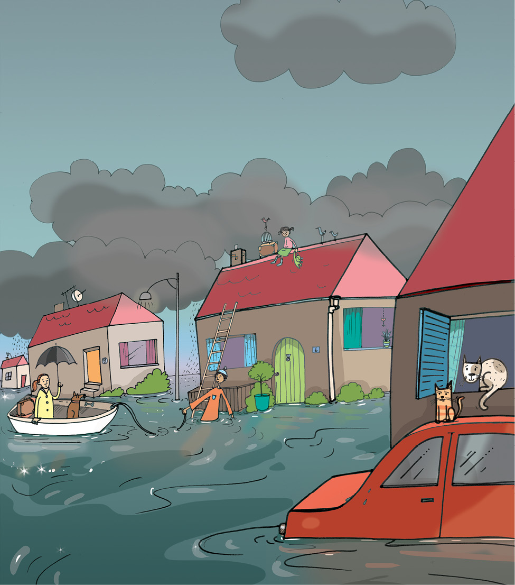
Figuur 2: 'n Dorp wat oorstroom is na 'n hoë reënval
Mense bou soms huise in oop lande sonder om te dink of dit 'n goeie plek is om te bly. Die lande is gereeld laagliggend en daar is nêrens waarheen die stormwater kan dreineer wanneer dit swaar reën nie. Die area is dan in vloed en die water vloei deur hulle huise. Dit veroorsaak baie skade aan die min besittings wat hulle het. Hierdie mense wil nie sommer hulle oorstroomde huise verlaat nie omdat hulle bang is dat hulle besittings geroof gaan word indien hulle in tydelike behuising sou intrek.
Week 1
Ondersoek deel 1
Kom ons kyk hoe ons voorouers geleef het (30 minute)
Die Khoi (Khoi-Khoi of Khoe-Khoe) wat ‘mens mens' beteken en die San (Boesmans of Sho) wat ‘mans sonder huishoudelike lewende hawe' beteken, was die eerste mense om in suidelike Afrika te bly. Hulle is die vroegste inwoners van ons land en bly al vir duisende jare hier.
Albei groepe is nomadies (swerwend). Swerwers bly nie vir 'n lang tyd op dieselfde plek nie. Hulle trek van plek tot plek in die soeke na voedsel vir hulself en vir hulle diere. Die Khoi mense het lewende hawe besit. Hulle het getrek opsoek na goeie weivelde vir hulle beeste en bokke. Die San mense was jagter-versamelaars. Hulle het nie lewende hawe besit nie. Die mans het wilde diere opgespoor en gejag. Die vroue het meestal eiers, wortels en bolle versamel.
Albei groepe het koepelvormige hutte gebou wat gemaak is van groen stokke wat aan die bopunt aanmekaar gebind is. Hierdie raamstrukture is dan met riete en gras van die omringende lande bedek. Sommige van die Khoi mense het die gras gevleg om matte te maak wat die rame dan bedek. Die grasse of riete het die hutte windbestand en waterdig gemaak. Wanneer hierdie mense dan weggetrek het, het hulle hul hutte net so agtergelaat en dus is die hutte nie so ontwerp om vir 'n lang tyd te staan nie. Die hutte was nie permanente wonings nie.
|
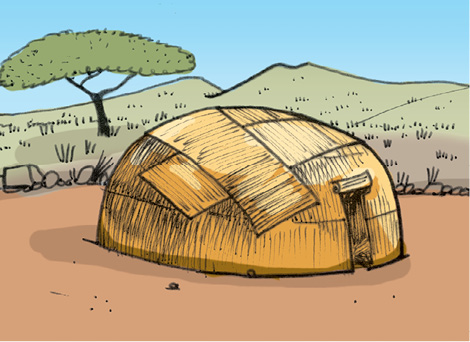 |
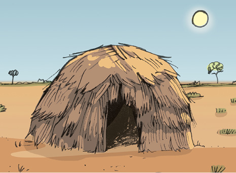 |
Figuur 3: Khoi hut Figuur 4: San hut

Kyk na die huise van die Khoi- en die San-mense
Werk in pare.
1. Watter materiale het die Khoi- en die San-mense gebruik om hulle huise mee te bou?
2. Waar het hulle die materiaal gevind wat hulle gebruik het?
3. Was die boumateriaal geskik vir die omgewing waar die Khoi en die San gebly het? Verduidelik jou antwoord.
Die materiaal was geskik omdat die windbestande en waterdigte skuilings
4. Wat het met die hutte en materiale gebeur elke keer wanneer hulle trek het?
Dit is agtergelaat. Die materiaal sal ontbind en dit sal kompos maak wat die land
5. Dink jy dat enige van die materiaal die omgewing waar dit gebruik is, sou benadeel? Gee 'n rede vir jou antwoord.
Nee, die materiaal kom van die omgewing; dit groei natuurlik; hulle sal alles
6. Hoekom het die Khoi en die San mense dit nodig geag om hulle strukture tydelik strukture te maak?
Hulle was nomadiese (swerwende) mense, en het nie in dieselfde tuiste op ʼn

Ondersoek deel 2
Permanente huise van ons inheemse mense (30 minute)
Ongeveer 2000 jaar gelede het mense stadig maar seker van die noorde van Afrika na die suide van Afrika migreer. Vier hoofgroepe het in die area wat nou Suid- Afrika is, geëindig: Nguni, Sotho, Venda en Tsonga.
Hierdie is die voorvaders van die meeste van ons inheemse kulture. Hulle het oeste geplant, meestal grane soos mielies vir voedsel. Hulle het beeste vir vleis en melk aangehou. Hulle het nodig gehad om naby riviere of strome te bly en in areas waar die land vrugbaar was.
Migreer: om van een plek in 'n land, permanent na 'n ander plek of ander land te trek.
Inheems: mense wat hulle oorsprong in 'n spesifieke land het.
Immigrant:'n persoon wat in 'n nuwe land vestig.
Omdat hulle op een plek gebly het, het hullepermanente huise gebou.
Sommige het koepelvormige hutte gebou. Hulle het dit gedoen deur:
- • 'n raamwerk met regop takke te maak
- • gebruik dun, groen jong boomtakke om 'n fyn netwerk tussen die regop takke te weef. Dit verseker 'n sterk raamwerk wat lank hou.
- • bedek die raamwerk met dekgras en met gevlegte grasmatte. Twee lae bedekking om die hutte teen uiterste temperature te isoleer en om die mense warm en droog te hou.
|
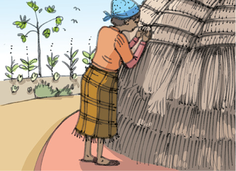 |
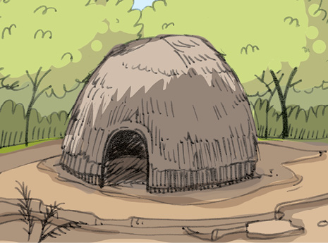 |
|
Figuur 5: Die raamwerk is met gras bedek. |
Figuur 6: Volledige koepelvormige hut. |
Ander mense het rondawelhuise gebou.
- • Jong boompies is gebruik vir die reguit, regop mure.
- • Gapings tussen die jong boompies is gevul met klei.
- • Die mure is aan die binnekant en aan die buitekant met klei gepleister.
- • 'n Keëlvormige dak is gemaak van houtstokke wat bedek is met gras, riete of dekgras.
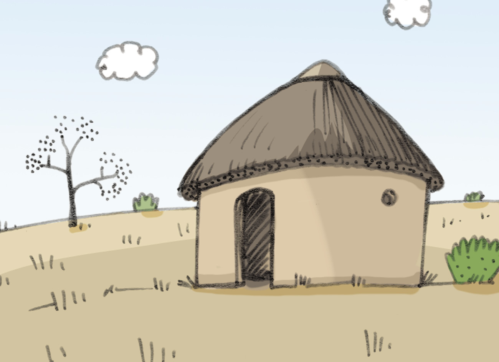
Figuur 7: Rondawelhut
Ndebele mense het in aanraking gekommet immigrante van Europa. Hulle het toe beginom reghoekige huise te bou.
- • Die mure is gebou met modder bakstene endaarna met modder gepleister.
-
•
Die buitekantse mure is met
helderkleurigeontwerpe versier. Dit maak die
huisekenmerkend en aantreklik.
Iets is kenmerkend wanneer dit 'n spesiale eienskap of kwaliteit het wat dit laat uitstaan bo ander soortgelyke dinge.
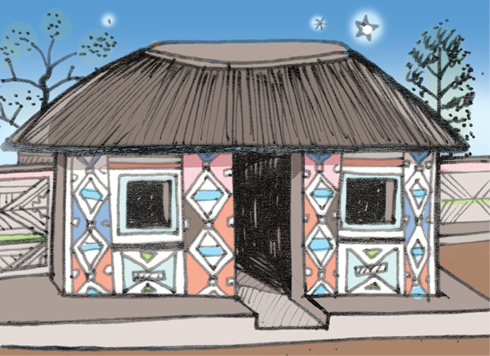
Figuur 8: Reghoekige Ndebele hut
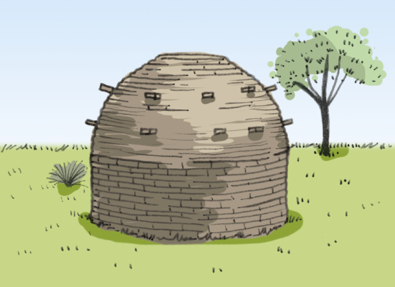
Figuur 9: Karbeelhut
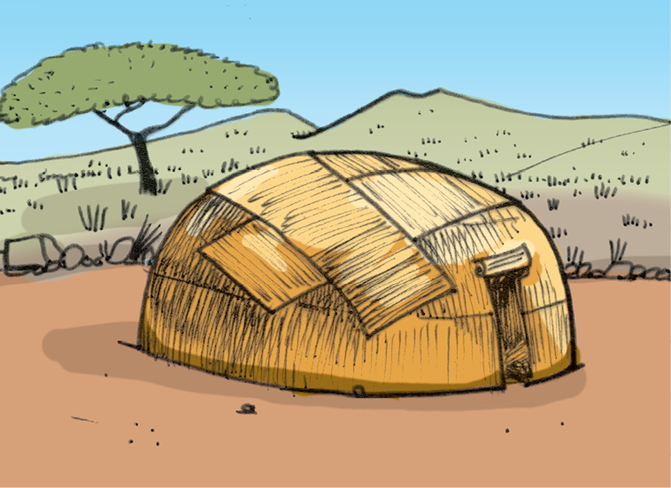
Figuur 10: Matjieshut
Matjieshutte is tydelike huise wat deur die Nama-mense van die Richtersveld gebou is. Hierdie is ook deur wit families gebou wanneer hulle tydelike huise nodig gehad het.
Nomadiese boere in die Noord-Kaap het karbeelhuise uit plat klippe gebou, met minimum hoeveelheid modder-klei om hulle aanmekaar te bind. Die styl is meer as 4000 jaar oud, afkomstig van die Mediterreense platteland.

Kyk na die huise wat gebou is deur ons inheemse mense
1. Waarom het hierdie mense permanente huise gebou?
2. Wat maak die koepelvormige hutte beter as dié wat die Khoi- en die San-mense gebou het?
Hulle was groter en sterker, en het twee lae gehad, nl. dekgras en grasmatte.
3. Hoekom het die mense wat ‘rondawel' hutte gebou het, besluit om modder as boumateriaal te gebruik?
Bakstene kan van modder gemaak word, en die modder raak baie vinnig hard, wat
4. Hoekom is dekgras voordelig om te gebruik as boumateriaal?
Dekgras is maklik om te vind. Indien dit ordentlik gedoen word, is dit waterdig
5. Wat is spesiaal omtrent die huise van die Ndebele-mense?
Hulle het modder bakstene gebruik wat hulle versier het. Dit het die huis
6. Is die materiale wat gebruik is om hierdie huise te bou geskik vir die bou van huise? Verduidelik jou antwoord.
Ja, hulle is. Indien die huis ordentlik gebou is, sal dit vir ʼn lang tyd hou. Hulle
7. Sal enige van die boumateriaal wat deur hierdie mense gebruik word die omgewing benadeel? Verduidelik jou antwoord.
Die materiaal het geen impak op die omgewing nie. Hulle kom van die omgewing af
en sal terug in die grond ontbind, wat die grond sal verryk. Modder bakstene sal
8. Dink jy die vroeëre mense wat weg van Noord-Afrika getrek het was immigrante, soos wat die mense is wat van Europa gekom het? Verduidelik jou antwoord.
Ja, hulle was immigrante omdat hulle baie kilometers ver oor die kontinente

Ondersoek deel 3
Wonings in informele nedersettings (30 \times 2 = 60 minute)
Baie mense migreer van die landelike areas na groter dorpe en stede, opsoek na 'n beter lewe. Hulle trek na hierdie areas sonder geld en sonder enige blyplek. Hulle bou dan tydelike plekke om in te bly, gewoonlik oop stuk velde naby die dorpe en stede. Namate daar meer mense aankom, word meer huise gebou totdat daar 'n hele groep huise naby aanmekaar is. Hierdie groep huise word informele nedersettings genoem.Hierdie informele nedersettings het geen paaie,geen watertoevoer, geen toilet-fasiliteite en geenafval-verwydering nie.
Hierdie tydelike huise word oor die algemeen plakkershutte genoem.
Mense gebruik materiale wat hulle in skrootwerwe optel en wat hulle kan bekostig om te koop. Sommige voorbeelde is: karton, plastiekseile, houtplanke, ou buitebande, stukke polistireen spons, en geriffelde sinkplaat velle.
WAARSKUWING
Asbes is baie skadelik vir mense. Die fyn vesels irriteer die longe en kan longsiektes en kanker veroorsaak.
Die enigste voordeel van asbes is dat dit hitte- en brandbestand is, maar dit vergoednie vir die gesondheidgevaar wat dit inhou nie.
Hierdie materiale het baie nadele:
- • Polistireen spons en karton kan maklik aan diebrand slaan en brand ook baie vinnig.
- • Droë hout brand ook vinnig.
- • Buitebande wat oud word en afbreek, gee gevaarlike dampe af wat ongesond is om in te asem.
- • Plastiek en buitebande gee swart dampe af wanneer hulle brand. Hierdie dampe is baie ongesond om in te asem.
- • Ou stroke materiaal wat van asbes gemaak word, word soms van gesloopte geboue geneem en word gebruik om mure en plafonne te maak. Asbes is baie skadelik vir mense en moet as boumateriaal vermy word.
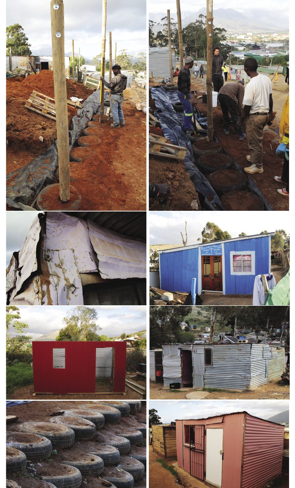
Figuur 11

Kyk na die materiaal wat gebruik word vir die bou van plakkershutte
1. Kyk na die foto's van plakkershutte en informele nedersettings op die vorige bladsy. Voltooi die tabel. Moet nie die voorbeeld gebruik wat aan jou gegee word nie.
|
Materiaal |
Waarvoor word die materiaal gebruik? |
Is dit geskik of nie geskik nievir waarvoor dit gebruik word? |
|
Bakstene |
Om 'n sinkdak in plek te hou |
Bakstene is nie swaar genoeg om 'n dak in sterk wind in plek te hou nie. |
|
Geriffeldeyster plate |
Dakbedekking |
Dit is geskik omdat dit waterdig en sterk is. Yster sal met tyd eventueel roes en lek. |
|
Hout planke |
Mure, vensters, deure, dak |
Hout is goed vir korttermyn gebruik, maar dit sal verrot as dit nie geverf word nie. Dit brand ook baie maklik. |
|
Laaghout planke |
Mure, vensters, deure, dak |
Dit is goed vir die gebruik binne ʼn plakkershuis, maar sal vinnig vrot indien dit aan die weer blootgestel word. Dit kan ook brand. |
|
Platgemaakte metaalstroke van houers |
Dit kan gebruik word om gate toete maak, en asmateriaal vir ʼn dak |
Die stukke is nooit baie groot nie, so dit sal heel moontlik lek. Hulle is gevaarlik omdat hulle skerp rante het. |
|
Rubber en plastiek stroke |
Word vir waterdigting gebruik |
Kan gou verniel in die son. Dit is gevaarlik indien daar klein kinders is, omdat hulle kan versmoor deur met die materiaal te speel. |
|
Buitebande |
Om ʼn dakplaat in plek te hou |
Kan effektief wees, maar is gevaarlik wanneer hulle dampe afgee. |
|
Glas |
Vir vensters |
Werk slegs as dit die regte grootte is en in ʼn raam is. Gevaarlik om te gebruik en moeilik om in die regte vorm in te sny. |
|
Hout pale |
Raamwerk virplakkershutte |
Geskik indien dit sterk is. Hulle moet in die grond geplaas word sodat die plakkershut stabiel is en nie skuif in sterk winde en storms nie. Dit kan dan strukturele skade veroorsaak. |
|
Asbes stroke |
Mure, plafonne, dak |
Asbes is brandbestand, maar die vesels is baie gevaarlik en moet nie gebruik word as boumateriaal nie. |
2. Dink jy dat die materiaal wat deur die Khoi- en San-mense en die inheemse mense gebruik is beter of slegter is as die materiaal wat gebruik word om plakkershutte te bou? Gee redes vir jou antwoord.
Die materiaal is beter omdat dit natuurlik groei en daar is dus altyd voorrade vir
herstellings. Dit besoedel ook nie die omgewing nie. Hulle hou nie lank nie, maar
 Week 2
Week 2
Kom ons help ‘n rampbestuurspan (30 minute)
Die scenario
Die rampbestuurspan wil beter voorbereid wees in noodtoestande. Hulle benodig noodskuilings wat maklik na rampgebiede beweeg kan word. Die skuilings sal gestoor word tot daar 'n behoefte aan hulle is. Hulle moet vinnig en maklik opgestel en weer weggepak kan word.
Die gesondheid van die rampslagoffers wat gehuisves gaan word in hierdie skuilings, is ook belangrik. Die skuilings moet stewig en wind- en waterbestand wees. Hulle moet veilig wees vir mense om vir ten minste 'n maand in te bly en moet groot genoeg wees vir 6 mense.
Hulle het gevra vir hulp om die skuilings te ontwerp:
- •
- • ontwerp 'n skuiling
- • bou 'n model van die ontwerp
- • die struktuur moet bedek wees met materiaal wat jy waterdig gemaak het
- • die skuiling moet mense veilig en gesond hou.
Die eerste taak is om uit te vind hoe om materiaal waterdig te maak. Die tweede taak is om maniere uit te vind om materiaal brandwerend te maak. Jou onderwyser het navorsing gedoen en het die volgende inligting gevind.
Verskillende maniere om materiaal waterdig te maak
- • Sproei materiaal met kommersiële silikoonsproei.
- • Smeer die materiaal oral oor met kerswas of petroleum jellie (Vaseline).
- • Verf die materiaal met enige akrielverf.
- • Bedek materiaal met deurskynende "kontak/plak plastiek velle". Die plastiek moet glad aan die voorkant wees en taai aan die agterkant. Jy kan dit ook ‘kleefplastiek' noem.
- • Meng 'n ½ koppie kookolie en 'n ¼ koppie terpentyn in 'nsproeibottel. Sproei die materiaal 'n paar keer met hierdie mengsel.
Verskillende maniere om materiaal se kans om aan die brand te slaan, te verminder
- • Meng 2 eetlepels boraks met 1 koppie warm waterin 'n sproei bottel. Sproei die materiaal totdat ditdeurweek is. Laat staan om droog te word ensproei dan weer.
- • Meng 2 eetlepels boraks en 1 eetlepel boorsuur met1 koppie warm water. Sproei die materiaal, laat ditdroog word, en sproei weer. Herhaal 'n paar keer.
-
•
Verf die materiaal aan albei kante met
akrielverf en bedek dan die nat verf met
sand.
"Brandvertrager" is iets wat jy by die materiaal of iets anders voeg sodat dit moeiliker brand.
Maak jouself gereed om waterdigting en brandwerende eksperimente in jou volgende les te doen
1. Jy gaan in groepe werk. Sommige groepe gaan die waterdigting eksperimente doen en ander groepe die brandwerende eksperiment. Werk in groepe van agt. Elke groep gaan verdeel in vier pare. Kry jou groepe en pare gereed.
2. Gebruik identiese stukke katoenmateriaal vir aldie eksperimente. Afvalstukke seildoek of denimsal ideaal wees. Elke stuk moet min of meer10 cm \times 10 cm wees.
Om die verskillende maniere van materiaal behandeling regverdig te vergelyk, moet jy dieselfde tipe materiaal vir elke behandeling gebruik.
3. Gebruik identiese stukke katoenmateriaal vir al dieeksperimente. Afval stukke seildoek of denim salideaal wees. Elke stuk moet min of meer 10 cm \times 10 cm wees.
Figuur 12: Sommige materiaal vir waterdigtingstoeste
Figuur 13: Sommige materiaal vir brandwerende toetse

Waterdigting en brandwering (30 minute)
In hierdie les gaan jy monsters voorberei om later te toets.
Groepe wat die materiaal waterdig gaan maak:
- • Paar A: Jy gaan drie stukke materiaal nodig hê. Bedek die eerste stuk met kerswas, petroleum jellie aan die tweede stuk, en akrielverf aan die derde stuk.
- • Paar B: Heg kleefplastiek aan 'n stuk van die materiaal.
- • Paar C: Sprei die kookolie en terpentyn mengsel oor 'n stuk materiaal.
Laat die monsters droog word op die koerantpapier. Skryf die metode wat jy gevolg het neer op die koerantpapier. Nou sal jy weet watter metode is waar gebruik.
Groepe wat die materiaal brandwerend gaan maak:
- • Paar D: Sproei die boraksoplossing op 'n stuk materiaal.
- • Paar E: Sproei die boraks- en boorsuuroplossing op 'n stuk materiaal.
- • Paar F: Verf 'n ander stuk materiaal met akrielverf en bedek met sand
Laat die monsters droog word op die koerantpapier. Skryf die metode wat jy gevolg het neer op die koerantpapier. Nou sal jy weet watter metode is waar gebruik.

Ondersoek deel 4
In hierdie les gaan jy jou monsters toets om uit te vind hoe goed die verskillende metodes werk. Gebruik een stuk materiaal wat nie deur enige metode behandel is nie; dit sal jou help om die effektiwiteit van die behandelings te vergelyk. Ons noem hierdie die kontrolemonster.
Stel een paar aan om die toetse uit te voer. Die ander groep lede moet neerskryf wat hulle sien.
Toets die monsters (30 minute)
Toets die waterdigte monsters
Gebruik die sproeibottel wat gevul is met water. Sproei elke monster tot hulle bo nat is. Lig die monster op en kyk na die koerant. Wat sien jy?
|
Metode toegepas |
Papier bly droog |
Papier effens nat |
Papier baie nat |
|
Kontrole monster (onbehandelde materiaal) |
✔ |
||
|
Kerswas |
✔ |
||
|
Petroleum jellie |
✔ |
||
|
Akrielverf |
✔ |
||
|
Kleefplastiek |
✔ |
||
|
Kookolie en terpentyn |
✔ |
1. Die mees effektiewe metode is:
2. Die metode wat die minste effektief is:
[Nota aan die onderwyser: Dit kan enige van die ander behandelings wees,
afhangende van die weer en hoe goed die leerders die behandelings op die
Toets die brandwerende monsters
Jy kan nie die hele monster aan die brand steek nie. Dit sal te gevaarlik wees. Sny 'n dun strook van elke monster. Die strook moet dunner as 1 cm wees.
Sommige van die monsters kan dalk brand. Dra skermbrille om jou oë te beskerm en oondhandskoene om jou hande te beskerm.
Jy benodig:
- • 'n metaal plaat, emalje strook of 'n stuk hout om op te werk. Moet nie op koerantpapier werk nie, aangesien dit maklik brand.
- • 'n kers en vuurhoutjies.
- • 'n knyptang of hout wasgoedknyper om die monster oor die vlam te hou.
Hou die monster oor die vlam vir 'n paar sekondes. Let op hoe dit reageer met die vlam en ook nadat dit van die vlam verwyder word.
|
Metode toegepas |
Reaksie terwyl in die vlam |
Reaksie na dit van die vlam verwyder is |
|
Kontrolemonster (onbehandelde monster) |
sterk vlamme |
sterk vlamme |
|
Boraksoplossing |
vlamme |
hou aan om stadig te brand |
|
Boraks- en boorsuuroplossing |
vlamme |
hou aan om stadig te brand |
|
Akrielverf en sand |
brand nie |
brand nie |
1. Die mees effektiewe metode is:
2. Die metode wat die minste effektief is:
Hoe brand verskillende tekstiele?
Vir hierdie eksperiment het jy dieselfde toerusting nodig wat jy gebruik het om jou brandwerende monsters te toets. 'n Paar vesels van verskillende tekstiele, byvoorbeeld wol of garing, en sintetiese materiaal soos nylon of poliëster, sal nuttig wees.
Een persoon gaan die eksperiment uitvoer terwyl die res van die klas gaan waarneem, en dit wat hulle waarneem in die tabel hieronder invul.
Volg dieselfde veiligheidsreëls as wat jy gevolg het toe jy die brandwerende monsters getoets het.
|
Monster |
Wanneer dit na die vlam beweeg |
In die vlam |
Wanneer van die vlam verwyder word |
Reuk |
Wat bly oor na dit gebrand het |
|
Monster 1 indien groente-vesels (katoen/linne) |
beweeg na die vlam |
brand vinnig met ʼn vlam |
hou aan brand |
gebrande papier |
wit as |
|
Monster 2 indien diere vesel(wol/satyn) |
trek weg van die vlam |
brandstadig sonder ʼn vlam |
smeul en gaan dood |
gebrande hare |
swart korrel wat inpoeierverander wanneer dit aangeraak word |
|
Monster 3 indiensintetiesevesel |
tip van die vesel smelt |
smelt, brand nie |
hou aan smelt vir ʼn kort tyd |
suur reuk |
harde swartkorrel, amper soos gesmelte plastiek |
Vergelyk jou waarnemings met die inligting hieronder. Nou sal jy weet van watter tekstiele jou monsters gemaak is. Skryf die tekstiele neer in jou waarnemingstabel.
|
Monster |
Wanneer dit na die vlam beweeg |
In die vlam |
Wanneer van die vlam verwyder word |
Reuk |
Wat bly oor na dit gebrand het |
|
Diervesels soos wol |
krimp weg |
brand stadig |
smeul en vlam gaan dood |
gebrande hare |
Donker korrel wat in poeier verander wanneer jy daaraan raak |
|
Plantvesels soos katoen |
trek na die vlam |
brand vinnig |
hou aan met brand |
gebrande papier |
grys, veeragtige as |
|
Sintetiese vesels soos nylon en poliëster |
tip begin smelt |
brand en smelt |
hou aan met smelt |
suur |
harde korrel van plastiek |
1. Watter van die tekstiele is die minste vlambaar?
In die volgende les gaan jy 'n stuk materiaal waterdig maak sodat jy dit kan gebruik om jou model te bedek. Jy gaan 'n stuk materiaal van ten minste50 cm \times 50 cm groot, nodig hê.

Maak deel 1
Maak die materiaal vir jou model waterdig (30 minute)
Jy moet die materiaal waterdig maak, sodat dit gereed is om jou model noodskuiling te bedek. Gebruik 'n stuk katoenmateriaal van ten minste50 cm \times 50 cm. Die materiaal hoef nie noodwendig in een stuk te wees nie. Jy kan 'n paar stukke aanmekaar werk om die regte grootte vierkant te skep. Maak seker dat jou hegtings sterk genoeg is om dit ook waterdig te maak.[10]

Week 3
Ontwerp deel 1
Ontwerp en skets die modelskuiling (30 minute)
Skryf 'n ontwerpopdrag en spesifikasies
Gaan terug na die situasie en lees dit versigtig deur. Maak ook 'n nota van wat die rampbeheerspan van jou verwag. Onthou dat jy 'n model bou: Jy moet dus die skaal vandie model in ag neem ten opsigte van die skuiling wat jy gaan ontwerp. Indien jy die lap van 50 cm \times 50 cm gebruik, en jy gebruik 'n skaal van 10:1, gaan die werklike skuiling 5 m \times 5 m wees. Sal dit groot genoeg wees vir 6 mense?
1. Skryf 'n ontwerpopdrag.
Ek moet ʼn skuiling ontwerp vir noodtoestande. Dit moet maklik wees om op te
stel en om weer weg te pak. Die skuiling moet stewig, windbestand en waterdig
Die model wat ek gaan maak moet al hierdie faktore in ag neem, en sal volgens
2. Identifiseer en lys die spesifikasies wat aan jou gegee is.
Dit moet ʼn raamwerk hê wat bedek is met waterdigte materiaal. Dit moet tot 6
vlugtelinge vir ʼn tydperk van een maand kan huisves. Die model wat ek moet bou
gebruik ʼn lap van 50 cm \times 50 cm, dus sal die model grootte gebaseer wees op die
Totaal [12]

Ontwerp deel 2
Ontwerpskets (30 minute)
Maak 'n skets van jou ontwerp
1. Maak 'n rowwe potloodskets van 'n moontlike oplossing op hierdie bladsy.
2. Maak seker jy plaas byskrifte by jou tekening wat die verskillende dele van die modelskuiling sal aandui.
3. Identifiseer die materiale wat jy gaan gebruik. [20]

Maak deel 2
Konstrueer die model (30 minute \times 2 = 60 minute)
Bou jou model
1. Versamel al die materiaal en toerusting wat jy vir die model gaan nodig hê.
2. Besluit hoe jy te werk moet gaan om die model te bou.
3. Dink aan enige veiligheidsmaatstawwe wat jy moet oorweeg.
4. Jy kan nou eers jou model begin bou.
5. Sodra die model voltooiis, maak seker dat jy al die spesifikasies nagekom het. Die spesifikasies word die eienskappe van die model noodskuiling.
6. Maak seker dat jy die gesondheid en veiligheid van die slagoffers in ag geneem het.
7. Maak aanpassings indien nodig.
Jou onderwyser gaan na die volgende kyk
- • Kan die model maklik vervoer word?
- • Kan dit vinnig en maklik opgestel en weer afgeslaan word?
- • Kan 6 mense gemaklik vir 'n maand daarin lewe?
- • Is dit windbestand en waterdig?
- • Is die waterdigting effektief? (Neem die gesondheid van die slagoffers in ag.)
- • Is dit veilig? (Neem die gevare van vuur in ag.)
- • Is dit goed gebou en stewig?
Sterkte en doen jou beste![28]